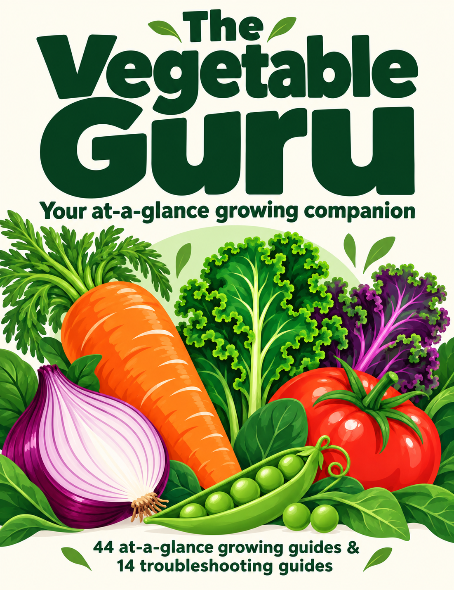
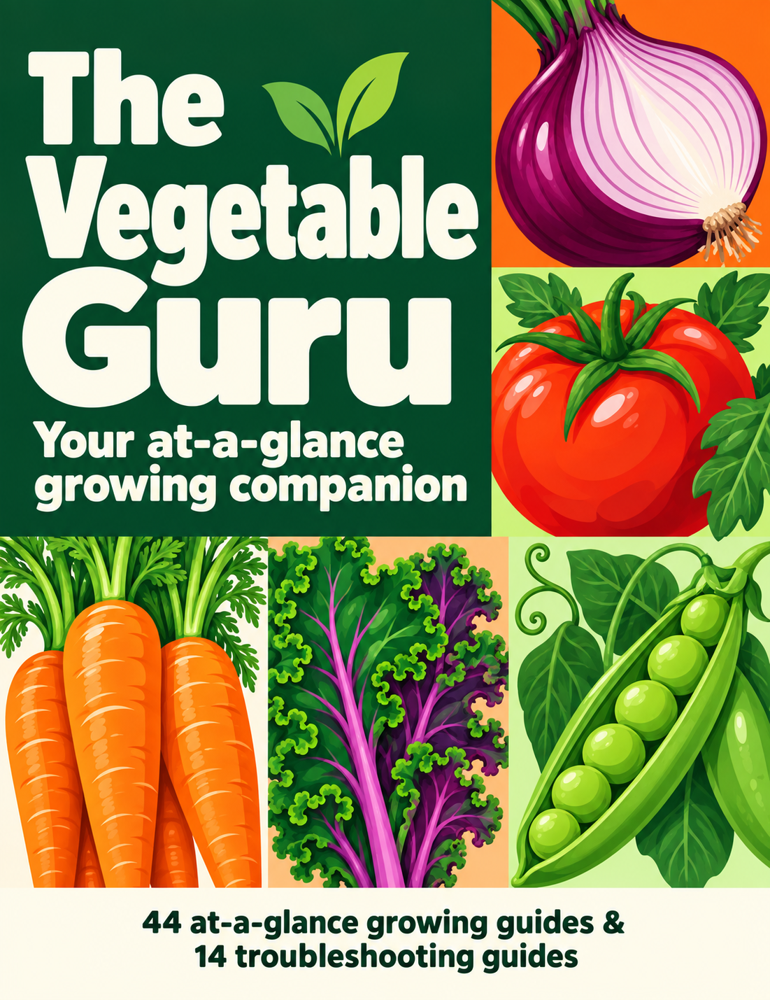
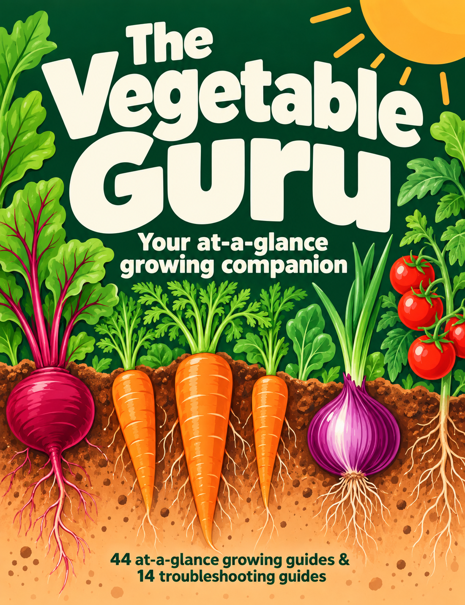

01 · Harvest crown

An enormous title above an abundant harvest. The brightest and most familiar gardening-book direction, with a pale circle connecting it to the guide pages.
Your at-a-glance growing companion
John’s feedback: the growing bed does not work; harvest has promise but its layout is boring. The grid is preferred for now. See new grid variations without the guide-count footer, including a real-page preview.

An enormous title above an abundant harvest. The brightest and most familiar gardening-book direction, with a pale circle connecting it to the guide pages.

A bold block grid makes the quick-reference promise visible. Large crops and clear colour blocks give it a graphic, organised character.

The growing bed makes the subject unmistakable. Cream lettering on deep green gives strong contrast, while the cutaway reveals the crop below the surface.
Click a sketch to inspect it at full size. These earlier sketches retain the now-removed 44/14 front-cover line. The grid is the preferred direction for further development; no final cover is approved.
The artwork and lettering were generated together with built-in imagegen for this comparison. Final editable typography, illustration details and print preparation come after concept selection. The cutaway is decorative rather than planting guidance. No interior pages or approved originals were changed.